桐島、Rubyやめるってよ
書いた人：nari (@nari3)

注意
この記事ではソースコードが一行も登場しません。 コード依存症の方には苦痛な記事になるかもしれません。
本記事の趣旨
2013 年 3 月に大江戸 Ruby 会議 03 が開催され、著者は『桐島、Rubyやめるってよ』というタイトルで招待講演させてもらいました。 その時のプレゼン資料と様子は私のブログ記事で公開しています。 ただ、プレゼン資料だけだと私が考えている内容がちゃんと伝わらない気がしており、本記事でプレゼン資料を補うものとして当日に喋った内容（から少し精査したもの）を記すことにしました。
話したいこと
下の写真は大江戸 Ruby 会議 03 の会場の風景です。 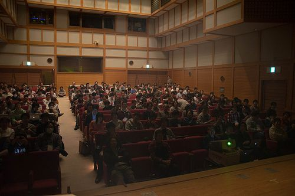
この会場でみなさんが間違いなく共通している点は、「プログラミング」ということだと思うんです。 ですので、今回は私自身を例にして、みなさんに共通する「プログラミング」というものに対する向き合い方というか態度というか、そのあたりを考察してみます。
本発表の狙い
今回の発表の狙いとして「もっとみんなに気軽にプログラミングしてもらう」というのがあります。最初にことわっておきますが「みんながみんなプログラミングをすべきだ！」とか、そういう押し付けをする気はまったくありません。「狙い」というよりも「淡い希望」といったところです。
昔はよくプログラミングしてたんだけど、最近は Excel とか Word ばっかり相手にして、あんまりプログラミングしてない人はまたプログラミングをはじめるきっかけになると嬉しいですし、現在、たくさんプログラミングをしている人はプログラミングとの向き合いを考えるきっかけになると嬉しいです。
『桐島、部活やめるってよ』
最近、映画鑑賞が趣味でいろんな映画を観ていて、その中でも昨年公開された『桐島、部活やめるってよ』がかなりお気に入りです。 映画『桐島』っていうのはあまり多くを語らない映画といいますか、ぽっかりと空洞がある映画で、自分の想像で補う部分が非常に大きい作品だと考えています。 いろいろと妄想して遊べる作品なんですね。
ということで、今回は『桐島、Rubyやめるってよ』という架空の作品を妄想してみました。
『桐島、Rubyやめるってよ』
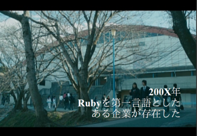
200X 年、Ruby を第一言語としたある企業が存在しました。
某社には桐島という社員がいました。 桐島はエースプログラマであり、女性にもモテモテ、上司からも一目を置かれるという、仕事もできるスーパーリア充です。 しかし、どうやらそんな彼が某社を辞めたらしい、という噂が流れ始めました。
桐島にはヒロキという親友がいました。 ヒロキは桐島と同じくモテモテのリア充でエースプログラマです。 そんなヒロキの悩みが映画『桐島』の重要なテーマになっています。
そんな優秀な彼らを抱える某社は大変な超エンタープライズな会社でした。数百人の PG（笑）を雇用していたのです。

朝のスタンドアップミーティングはたっぷり数時間掛けておこなわれます。 貧血で倒れる人がいそうですね。
そんな某社には二つの部活（というか集まり）がありました。
自社サービス作成会
ひとつが「自社サービス作成会」と呼ばれるものです。 この集まりでは本業の受託開発がおわってから、有志が居残りをして自社サービスを作っています。
「意識が高い」ヒロキは会社に入社してから真っ先に自社サービス作成会に入りました。 「世界中のユーザから使われるサービスをつくるぞ！」という希望を胸に秘めて。
しかし、その実情は…。 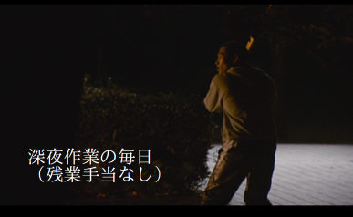
連日、みんなであつまって深夜まで作業していたのです。 しかも、ボランティアでやってるので残業手当が出るわけでもありません。 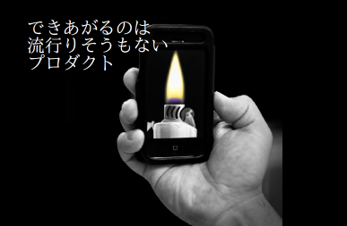
そんなに大変な思いをしても出来上がるのはゴミみたいなプロダクトでした。
なんかツイッタークローンみたいなやつとかが量産されたのです。

リーダーにはやる気はありますが、技術力がありません。
ヒロキは集まりに行く意味を見失います。 「続けていても成功するわけがないし、目的が見えない。こんなことをやっていても時間の無駄だ」と。 そしてヒロキは次第に集まりに行かなくなりました。
なぜリーダーはゴミプロダクトをリリースし続けるのか？
あるとき、ヒロキは自分の疑問をリーダーにぶつけました。

「リーダーはなんのためにこの集まりを続けているのか？」ということです。 なんの目的があるのか知りたかったのです。
するとリーダーは

「次のリリースではもしかしたら注目されるかもしれないじゃん…」的な回答するのでした。
GC 研究部
もうひとつの集まりが「GC 研究部」です。

見ての通りすごいオタクの集まりで、なんかコソコソ喋ってニヤニヤしているような連中です。 大抵が自分の好きな GC アルゴリズム（推し GC）の話で盛り上がります。 そんな彼らは周りから見ると異質であり、他の社員からは白い目でみられています。
女子からは笑われ。

上司からも見放されています。 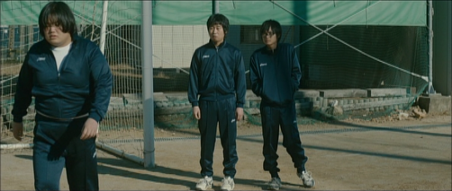
彼らはヒロキや桐島とは対極であるアングラな存在です。
しかし、彼ら自身はなぜかとても楽しそうだったのです。
あんなに嘲笑されているのにもかかわらず…ッ。

ヒロキの憂鬱
その一方で、ヒロキは思い悩んでいました。

ヒロキは某社内では人並み以上にプログラムが書ける自信があり、実際にエースとして扱われているわけです。 しかし、ヘタに人並み以上にプログラムが書けてしまうがゆえ、自分が「スゴイ級」のプログラマではないことも痛感していました。 天才ハッカーみたくイノベーティブなプロダクトを作れる気がしなかったのです。 そのため自分がこれから先、何を目的にプログラミングをしていけばよいのか意味を見いだせなくなっていました。
そんなときに GC 研究会の人たちを見て「彼らの原動力はどこにあるのか？」という疑問を持ちます。 彼らはあんなに意味のなさそうなことばっかりやってるのに、どうしてあんなに楽しそうなのか。そして続けているのか。 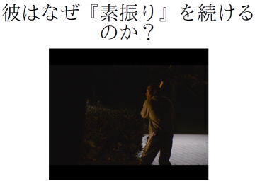
また、リーダーは狙ってもゴミみたいなものしかできないのに、なぜ流行りそうもないプロダクトを作りつづけ、なぜ深夜残業を続けるのでしょうか？
…はいッ。ええと、ここまで『桐島、Rubyやめるってよ』のあらすじ（妄想）はおしまいです。 少しでも映画『桐島』が気になった人は、DVD やブルーレイ、iTunes ストア、Google ストアなどを利用してぜひ鑑賞してみてください！！
原作もオススメ！

「ぽんこつ」プログラマ列伝
妄想版『桐島』のあらすじを受けて、やや昔の自分のことを振り返ってみたいと思います。
プログラミングが楽しくて、気の赴くままプログラムを書いていました。 で、いろいろ書いてると「オレってばスゲー」みたいな感じによくなりました。 なんかしらないけど万能感というか、「私はなにかを成す人間かもしれぬ…ｺﾞｺﾞｺﾞ」みたいな。 「私が神だ…」みたいな感じがあったのです。
これはプログラムをはじめたころは誰でもそうなのかもしれません（ですよね？ そうですよね？）。 でもプログラミングを続けていると自分より凄い人には嫌でも出会うもので、そのような出会いをいくつも経ると「自分はたいしたプログラマじゃないな〜」と痛感するようになりました。 いえ、むしろ、それよりも進んで自分が「ぽんこつ」ではないかとさえ思い始めたのです。
ぽんこつ事例 その 1
「いやいや、そんなことないよ！」と優しい人は声を掛けてくださるでしょう。 そんなみなさんを納得させるため、ここからは具体的なぽんこつ事例を挙げていき、自分のぽんこつ度の検証していこうと思います。
一つ目の事例はみなさん大好き Perfume に関するものです。私自身は Perfume に関してそれほど思い入れがあるわけでもないのですが、Perfume が perfume-dev という面白い取り組みをしていたのに興味を持ちました。
Perfume は彼女たちのダンスなどのモーションデータと音声データを github 上に公開しました。 このデータを使って世界中のクリエータたちにデータを基にして自由に作品を作ってもらい、Perfume 自身の世界的な知名度をあげようというのが perfume-dev の狙いのようです。
すぐに Ruby で動くようになるかなあと思ってたのですが、perfume-dev が公開されて一年ほど経っても一向に Ruby で動かしたという話を聞きません（Rubyist の中には熱狂的な Perfume ファンがいるにも関わらず！！）。 「それじゃあなんかやってみるか」と重い腰を上げて、Ruby を使って Perfume を踊らせることを決意しました。
私は某ゲーム作成である程度 Ruby/SDL のスキルがあったので、描画には手に馴染んだ Ruby/SDL を利用しました。 モーションデータはBVH形式でデータが公開されており、まずはこれをパースする必要がありましたが、運良く gem があったのでそれを使うことにしました。
そして、お盆休みに徹夜してプログラムを書き、ついに Perfume を踊らせることに成功したのです！ わーい、できた〜！
徹夜して寝ぼけてたので「Perfume もずいぶん近未来的というか、アグレッシブな関節の使い方するんだな」とマジで誤解して、Youtube に上記の動画の上げて寝ました。
この動画には次のような反響がありました。
 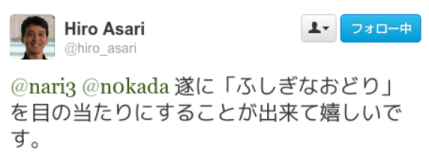
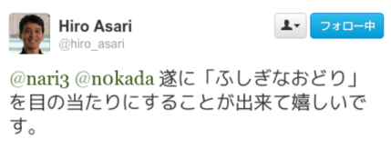
プログラマは HP よりも MP の方が大事だと思うので、とても邪悪な動画を作ってしまったことを深く反省しております。 という冗談は置いといて、徹夜したにもかかわらず Perfume もろくに踊らさせられないなんて、と深く落胆したものです…orz
ぽんこつ事例 その 2
私は絶対復習という Web サービスをほそぼそと動かし続けております。
この Web サービスは三年くらい前に作ったもので、忘れたくない事柄を登録しておくと、RSS によって適切な復習のタイミングを知らせてくれるというものです。
このサービスを作った時には「は〜、天才的なウエッブサービスできたわ〜」とニヤニヤしたものです。
しかし、現在は中卒コミッタ1に「あれはオワコン」と言われる始末です…orz
ぽんこつ事例 その 3
私は configict という gem を作ったことがあります。 この gem はアプリケーション固有の設定ファイルを管理するときに便利なやつです。
たとえば、Rails アプリで独自の設定ファイル作るとき config.yml.sample みたいなのを用意するのがいまのところの定石となっています。 しかし、大人数で作業していると他の人が config.yml.sample をいじり、なにかの項目を編集しているのに気づかないことがよくありました。 そうなってしまうと「なんかアプリが動かないぞ…」となり、原因を特定するのに時間がかかることがあります。
そこで configict では xxx.yml.sample と xxx.yml で項目の差分があったら例外を投げるようにしています。 機械的にミスを防げて超便利！！
私をこの gem を作った時には「は〜これは神 gem できたわ〜」とニヤニヤしたものです。 意気揚々とブログも書きました。
しかし、後日、松田さんに「いらないんじゃないすか」2と言われてしまいました…orz
ぽんこつ事例 その 4
私はいままで CRuby の GC をいろいろと改善してきました。たとえば次のようなものです。
- Lazy Sweep
- GC::Profiler
- Bitmap Marking
こうやって振り返ってみると「ふ〜、けっこう頑張ったわ〜」と自分を褒めたくなり、ニヤニヤしてしまいます。
一方、その頃、海外では…。
Ruby’s GC is a steaming pile of shit3
引用元 - The Cost of Ruby 1.9.3’s GC::Profiler
OH…
ぽんこつ事例 その 5
Github にはスターという機能があります。 スターとは、Github の任意のプロジェクトにつけられる、Facebook の「いいね！」みたいなもんです。4 つまり、このスター数が多いほどみんなから注目をあつめているプロダクトとなり、社会的には価値があるっぽい印象を受けます。
では、俺達の @a_matsuda さんの github プロフィールを見てみましょう。

次に、私の github プロフィールを見てみましょう。

スター数に注目して見比べてください。まさに「ケタ違い」ですね。
ロックスターにはなれない
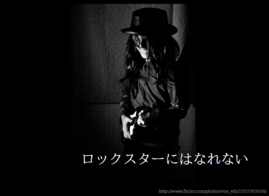
「ああ、私はロックスターになれないのだな」ということに気付きます。 つまり、一般的に広く使われるプロダクトとかは作れそうもないんじゃないか、と。 狙ってもうまくいかないし、自分の中で手応えがあってもパッとしないのです。 「神プロダクトできたわ〜」と思っても、それは世間的にはゴミなのです。
「なぜプログラミングを続けてるんですか？」
といったところで、『桐島』のセリフをもじって下記の問いについて考えてみましょう。 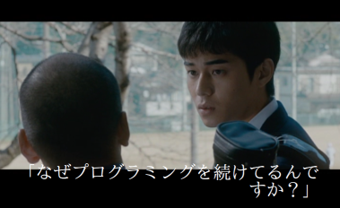
何者にもなれない、きっと成功もできないであろう私はなぜプログラミングを続けているのか、そんな意味もないことを続けているのか、という点です。
なぜ「コードを書く」のか？
上記のことについて考えるために、まず何のためにコードを書いているのか、コードを書く動機、という点について考察してみたいと思います。
典型的な動機としては以下のようなものが考えられそうです。
- 人に使ってもらいたい
- お金
- 有名になりたい
- 日頃の生活を便利に
- etc…
まず、よく「人に使ってもらって喜んでもらうのを観るため」という理由を聞きます。 わりと綺麗な動機に見えますね。
次に「お金」。仕事でコードを書くのはほとんどがお金のためでしょう。
「有名になりたい」とおおっぴらに言う人は少ないでしょうけど、動機としてはべつにおかしくありません。
ここではすべてを上げきれませんが、たぶん、人それぞれに様々な動機があるはずです。 別にどれが間違いというわけでもありませんし、個人的には結果としてコード書いてるならそれでいいのではないかと考えています。
さて、ここからは「日頃の生活を便利に」という点について、個人的な感想を言いたいと思います。
「日頃の生活を便利に」
この「日頃の生活を便利に」というのはかなり昔から言われている「コードを書く動機」です。たとえば『伽藍とバザール』には以下のような言葉が記されています。
最高のハックは、作者の’'’日常的な問題’'’に対する’'’個人的な解決策’'’として始まる
私はこれを読んだ時、「マジで？」と思いました。 個人的にそういう経験があまりなかったからです。
はじめてコードを書いた時
はじめてコードを書いた時のことを思い出してみると、まったくもって日常の問題を解決しようなどという高尚な理由はありませんでした。 社会の役にたつ…とか「は、何それ」ってかんじです。
私がはじめてつくったプログラムはポケコンの Basic を使った数取りゲームです。 夢中になって作り終わったあと、私は「はー神ゲーできたわー」と思い、自信満々で友達に見せました。
しかし、私の友達は「ふーん」と一言返してきただけでした。私はこの言葉にかなり傷ついた覚えがあります。
それでもなんでコードを書くのをやめなかったかというと、それは__コード書くのがすっげー面白かった__からなのです。
もしコード書くのが楽しくなかったなら、きっと「ふーん」と言われたところで辞めているはずです。

それは今も変わらない
その考え自体は今もあまり変わっていません。 私が GC を改善するのも「楽しい」からやっているのです。 別に私は個人的に GC で困ったからってことはなかったのです。 どうしても困るから改善したい、とかではありませんでした。
マイヒーローたち
私の個人的な話ばかりだと飽きてしまうので、ここからは私が尊敬する方々のプログラミングへの向き合いかたについて、私が独断と偏見で分析した内容を紹介したいと思います。
mame さん
まずは mame さんについてです。

mame さんの、表の顔は、Ruby2.0 のリリースマネージャであり、TAPL の翻訳者です。 しかし、その裏の顔は、Quine を愛する世界的な変態紳士なのです。
mame さんの凄さを知ってもらうためには以下の動画を見てもらうのが速いでしょう。
RubyKaigi 2010 credits (「超絶技巧 Ruby プログラミング」より) - ニコニコ動画
るびまのインタビューではこの RubyKaigi2010 のスタッフロールが代表作だとおっしゃられていました。
Quine というのは簡単に言うと「自身のソースコードと完全に同じ文字列を出力するプログラム」のことです。 上記のスタッフロールも Quine で書かれていて、ちゃんと音楽もなるように作られていました（なにそれ怖い）。5 スタッフロールの最後にアスキーアートで描かれたロゴが表示され、それ自体がスタッフロールのプログラムになっているようです。
私もこのスタッフロールが流れる現場にいたのですが、何が起こっているのかわからずヤバイ感じでした。 わけわかんない感じヤバイです。 最凶のコミッタといわれる所以もよくわかります。
「なぜ Quine を書いてるの？」

先日、Ruby 20 周年記念パーティの会場で mame さんに会う機会があり、せっかくの機会なので上記の質問をぶつけて見ました。 その回答は次のようなものです。
よくわかりません
ただ、その話の中でも印象的だったのは
書いてるときが一番楽しい
という言葉です。Quine を公開したあとにみなさんから反応もらったりするのもまあうれしいけど、やはり書いてる時が一番楽しいそうです。 書き終わったあとはわりとどうでもよくなる、とかおっしゃられていたのも印象的でした。
まつもとゆきひろさん
次に紹介するのはまつもとさんです。

みなさんご存知、Ruby のパパです。 そのほか驚くべき数の肩書きを持ちますが、すべての肩書きをここに記すには余白が狭すぎるため、割愛させていただきます。
「なぜ Ruby を作ったのか？」
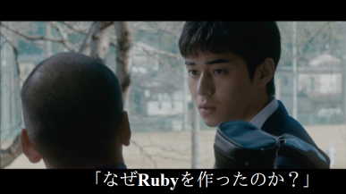
まつもとさんが Ruby を作った理由としては、過去に以下のようなことを述べられていました。
It was just ‘'’my hobby’’’
引用元 - Yukihiro “Matz” Matsumoto: Ruby Inventor - gihyo.jp
竹内郁雄先生
最後に紹介するのは竹内郁雄先生です。

いわずとしれた LISP ハッカーで、TAO/ELIS の開発や、Takeuchi 関数を発案されています。
私との竹内先生の個人的な関わりは通称「GC 本」の監修をしてもらったことです。

GC 本に書かれている監修者のコメントとして、竹内先生は以下の言葉を記されています。
再利用されることなくお亡くなりになった(リークした)オブジェクトの’'’供養’'’を行ったこともあるオブジェクト思い。
これはなんか本格的に供養したそうで、どうも伊豆のどこかの神社で供養されているそうです（笑）。 先生、なにやってんすかｗｗ 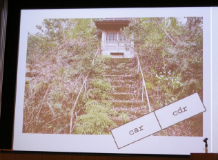
真鵺道記法
GC 本の校正中に「真鵺道記法」というものを教えていただきました。 竹内先生が考案された記法でメールなどで校正をやりとりするときに便利なものです。
diff 形式だと行単位で変更点を示すので、typo などの細かい修正の場合、位置を特定するのが面倒です。 原稿の都合で改行は段落ごとに、とかあったりしますし。
ですが、真鵺道記法を使えば問題は解消されます。 興味のある方は「電子メールで原稿を修正する方法―真鵺道(マヌエド)(PDF)」をご参照ください（普通に読み物としても楽しいです）。 また、竹内先生のエッセイがまとめられたページもオススメです！！
手書き論文
GC 本を執筆中、挿入する絵の書き方で悩んでいたところ、竹内先生が昔かかれた手書きの論文をおくっていただきました。
手書きはスゴイ時間がかかったそうですが、なんか味があっていいですねえ…。

この論文の最初の章のタイトルは「もくろみ」ですｗｗ

タイトルの横に顔写真が乗っていますが、これは当時極めて異例だったそうです。
現在でもあまり見かけないような気がします。

三章「ひらきなおれば」ｗｗｗ
論文自体の内容も興味深いもので、楽しく読むことができました。
遊んでる？

さて、あらためて振りかえってみますと、この三人のプログラミングへの取り組みを見ていると、なんか楽しそうな感じがしてきます。 率直に言えば__なんかスゴイ遊んでる！__感じがするのです （もちろん、きっちりと泥臭いこともやられているのですが、なんか会った時の雰囲気がみなさん「楽しそう」な感じなのですよね）。
__遊ぶため__なら__目的__を選ばない
さて、このようなヒーローたちを見ていくにつれて、__遊ぶ__ためなら__目的__を選ばずにやっていくのもありなんじゃないか、と個人的に考え始めました。
遊び重要
__遊び__というのはとても大事だと感じています。だって遊んでると楽しいですよね。
たまに「書きたいものがないからコード書けない」みたいなことを言う方がいらっしゃいますが、個人的には目的決定なんて別に慎重に選ばなくてもいいのではないかと思います。 もっと気軽に手を動かしはじめてもいいのではないかと。
別に狙ったところで私なんかは大したものはできません。神 gem できたとおもってもゴミだったりしますし。なので、利益を求めてコード書くよりももっと積極的かつ気軽にコードで遊んだ方が楽しいのではないかと思うのです。
『伽藍とバザール』には以下の言葉が記されています。
オープンソースの成功のいちばんだいじな影響の一つというのは、いちばん頭のいい仕事の仕方は’'’遊ぶこと’'’だということを教えてくれることかもしれない。
この点について、私はとても共感しました。
コードを書いてる時
コードを書いている時っていうのは、いろいろ考えたりして楽しいものです。 名前はこうで…アルゴリズムはこうで…みたいな。 それで書いてる最中はすっかり目的を忘れていることが多いと思います。
できあがって嬉しい、というよりもコード書いてる時がたのしかった、と思ってしまいます。 まあ別にいいものができなくっていいじゃん、最大限たのしかったのなら、という諦めの境地といいますか…。
それにコードを書くのはストレス解消にもってこいです。 生きていればストレスも溜まるし、嫌なことだって沢山あります。 そういうドロドロしたものをコードにぶつけることによって、コードというのはまた輝いてくると思います（笑）。
「遊び」実践編
じゃあ、コードを書いてお手軽に遊ぶにはどうすればよいでしょうか？ その方法のひとつをみなさんに教えたいと思います。
yharaさん
 （注: この写真は Dave Thomas6 が撮ったものですｗ）
（注: この写真は Dave Thomas6 が撮ったものですｗ）
私の同僚であり、プロの esolang 作家でもある yhara さんは、遊ぶのがうまく、いろいろと大人の遊びを教えてもらいました。 いや、直接教えてもらったわけではなく、背中で教えてもらった感じですね（ｶｺｲｲ）。
プログラミングコンテスト
その遊びのうちのひとつがプログラミングコンテストです。 プロコンのよいところはなんといっても「目的決定のプロセスがない」ところです。 与えられた問題を解くだけでいいし、もうなんというか遊び放題なのです。
その他にも、ちゃんと役立つ点がありますが、これについては森田創（omo）さんの gihyo の記事を参照してください。 というか読むべき！！
ICFPC
さて、プロコンのうちもっとも私が気に入っているのが、ICFP という学会が主催する ICFPC です。
yhara さんが弊社（NaCl）の社内 ML で共同の参加者を募っていたのを見たのが ICFPC を知ったきっかけでした。 それからというもの、弊社の有志数人で ICFPC に参加するのが、毎年恒例の行事となっています。
去年はなんか山に登った感のある集合写真を取ろうということで、以下のような写真を撮ってみました。 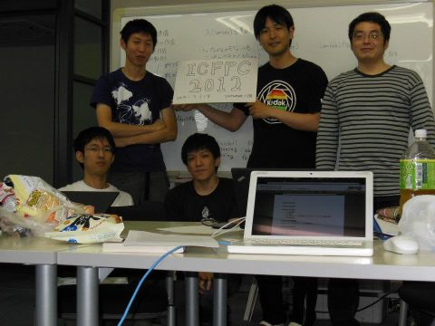
毎年、こんな感じでホワイトボードを使って戦略などについてみんなで議論します。

参加しはじめてからもう今年で 5 年目になろうとしていますが、われわれの成績はけっして上位ではありません。 ですが、なぜ続けているかというと、それは__楽しいから__です。
いや、ほんとに、楽しい、です…。

今年の ICFPC は 8/8〜8/11 に開催されます。 ぜひみなさんもチームを作って（ひとりでも楽しいでしょうけど）参加してみてください。
AtCoder
ICFPC は 1 年に 1 度しかありません。しかし、われわれにはもっとプロコンが必要なのです…。 そこで紹介したいのが AtCoder です。 日本人によって作られたプロコンのサイトで、問題が日本語で読めますし、なんと Ruby がつかえます！
NaCl では、有志が集まって隔週間隔で過去問を解いています。
これはなかなかよいものですよ。

プロコン勉強会、どうでしょうか。発表資料も必要ないし、楽ですよ。 ぜひ御社でもご検討いただければ幸いです。
まとめ
そろそろ、まとめちゃいましょう！
私は「プログラミング = 遊び」なんじゃないかと考えています。
また、コードを書きはじめるのに__目的決定__はそれほど重要じゃない気がします。 遊び始めるのに理由はいらないように、プログラミングするのに理由はいらないのではないでしょうか？ ほんとうに気軽に書き始めればいいのです。
「__遊び__重要、__楽しい__重要」
個人的には、はじめてプログラミングしたときの楽しさ、遊びの感覚を忘れないようにしたいと思います。
これはわりと重要なことなんじゃないかなと考えています。

上記はまつもとさんが札幌 RubyKaigi2012 でおっしゃられていた言葉です。
周りからの評価とか、ソーシャルコーディングしててもプルリクが一件もこないとか、そういう成果物に対するフィードバックがないことにあんまりがっかりしないで欲しいと思います。
もっとプログラミング、という行為自体を楽しんでほしいのです。

いろいろ嫌なこともあると思いますけど、コード書くという遊びは楽しいものです。 ストレス解消にもなりますし。 私はコードを書くことを楽しんでいきたいと思っています。 みなさんもコードを書いて遊んでみてはどうでしょうか、というのが私の願いです。 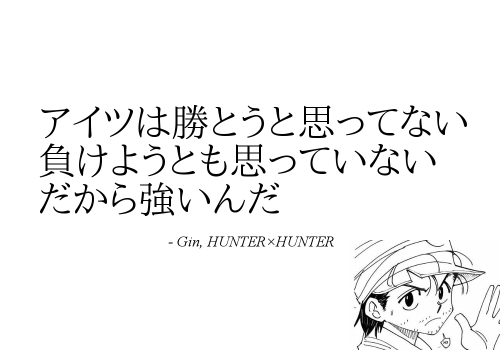
そして、コードを書くという遊びをめいいっぱい楽しんでいる人が、最終的には強いんじゃないのかな、と思います。
テキトーに遊んでたら Perfume がキビキビ動くようになったので、ちょっと自慢しておきますね（キビキビ動かすために実は GC を止めている……のは内緒）。 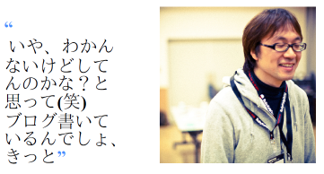
これは OO エンジニアの輪の中で関さんが「若いエンジニアに一言」というときに言ってた言葉ですね。 もっとプログラミングしよう、という趣旨です。 私はこの言葉が好きでちょくちょく思い出します。
今回の記事を読んで、少しでもプログラミングしたいと思ってくれたのだとしたらとても嬉しいです。

上記は zzak という Ruby コミッタの言葉です。彼の人柄がでていて、とてもよい言葉だと思います。 どんなクソコードだったとしても無いよりあったほうがいいじゃん、ということで気軽に書いてください。 別に車輪の再発明とかやっちゃっていいんすよ。
書きたいネタがなければ AtCoder で問題でも解いてみましょう。

最後は竹内先生の「最終講義」から上の言葉を持ってきました。 これはもう、書いてあるとおりの意味ですね。
繰り返しになりますが、今回の記事が、みなさんがコードを書きはじめるきっかけになったり、プログラミングへの向き合い方を考えるきっかけになると、筆者としては喜ばしい限りです。
では、この辺で。駄文、失礼しました。
写真など
- http://www.flickr.com/photos/hsbt/8562533775/in/set-72157633013243016
- http://www.flickr.com/photos/vox_efx/2253783030/
- http://www.flickr.com/photos/john_lam/1910968816/
- http://jibun.atmarkit.co.jp/ljibun01/rensai/genius/01/01.html
- http://www.flickr.com/photos/pragdave/542376644/
- http://www.flickr.com/photos/recompile_net/6445473013/
著者について
nari。 ただの GC 好き。 最近、CopyGC（引越し）により部屋のルンバリティが向上し、念願のルンバを手に入れた。
URL: http://www.narihiro.info/, Twitter: @nari3
-
@sora_h ↩
-
理由としては「変更したら一声かければいいじゃないですか」とおっしゃられたような。たしかに！ ↩
-
字面から想像つくと思いますが、罵り言葉です。 ↩
-
リポジトリのwatchとは異なり、スターを付けてもリポジトリのアクティビティが自分のところへ通知されない。カジュアルなお気に入り機能。 ↩
-
ターミナル上のCUIプログラムで自力で音を出す方法については mame さんがご自身のサイトで解説されています。 http://d.hatena.ne.jp/ku-ma-me/20100901/p1 ↩
-
『達人プログラマー』の共著者で、現在は「The Pragmatic Bookshelf」というプログラマ向け電子書籍出版サイトを手がけている。数々の活動で Ruby コミュニティにも大きく影響を与えているスゴイ人。 ↩